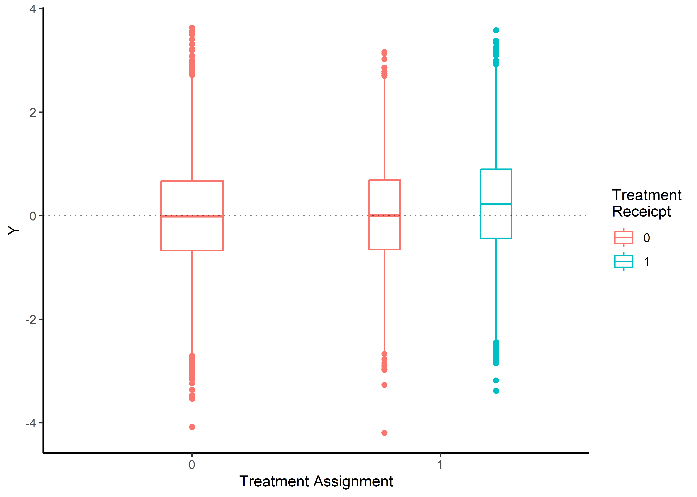

flowchart LR
Z ==> W
W ==> Y
U --> W & Y
Compliance Types (\(G_i\))
Compliers (co): Participants who would receive the treatment if assigned to the treatment group and who would not receive the treatment if assigned to the control group
Never-takers (nt): Participants who would refuse treatment regardless of treatment assignment.
Always-takers (at): Participants who would receive treatment regardless of treatment assignment. When assigned to the control condition, they would actively seek out the treatment.
Defiers (df): Participants who would refuse treatment if assigned to the treatment group but would seek out treatment if assigned to the control group.
\[ G_i = g(W_i(0),W_i(1)) = \left\{ \begin{array}{ll} \text{nt if } W_i(0)=0,W_i(1)=0\\ \text{co if } W_i(0)=0,W_i(1)=1 \\ \text{df if } W_i(0)=1,W_i(1)=0 \\ \text{at if } W_i(0)=1,W_i(1)=1 \end{array}\right. \]
WarningCompliance types are not generally identified.
Consider a participant who was assigend to the treatment (\(Z\) = 1) and also participated (or took) the treatment (\(W\) = 1). Is he/she a complier or an always-taker? Or consider a participant who was agained assigend to the treatment (\(Z\) = 1), but did not participate (or take) the treatment (\(W\) = 0). Is the participant a defier or never-taker (hernan2024?)?
Notation
Y = Outcome
Z = Assignment to treatment
W = Receipt of Treatment
\(Y_i^{obs} = Y_i(Z_i, W_i^{obs})\)
Different types of analyses
Different types of analyses to analyze a randomized experiment (sagarin2014?)
- Intention-to-treat
- As-treated analysis
- Per-protocol analysis
- Complier average causal effect
- Dose–response estimation
- Propensity score analysis
- Treatment effect bounding
One- and two-sided Noncompliance
By noncompliance we refer to the situation where some units who are assigned to receive a particular treatment level do not comply with their assignment and instead receive an alternative treatment (imbens2015?)
One-sided noncompliance
One-sided noncompliance means that it is asymmetric. Only units that are assigned to receive a treatment can circumvent their assigned treatment. Units in the control condition comply with this assignment (imbens2015?).
Observed outcome: \(Y^{obs}_i = Y_i(Z_i,W^{obs}_i)= Y_i(Z_i,W_i(Z_i)) = \begin{cases} Y_i(0,0), \text{ if } Z_i = 0, W^{obs}_i = 0\\ Y_i(1,0), \text{ if } Z_i = 1, W^{obs}_i = 0 \\ Y_i(1,1), \text{ if } Z_i = 1, W^{obs}_i = 1 \\ \end{cases}\)
test
Instrumental Variable Estimation
To perform instrumental variable estimation, 3 conditions need to be met (see hernan2024?):
- Relevance condition: \(Z\) is associated with \(W\)
- Exclusion restriction: \(Z\) does not affect \(Y\) except through its potential effect on \(W\)
- Marginal exchangeability: \(Z\) and \(Y\) do not share causes
- Effect homogeneity vs. monotonicity
In RCTs \(Z\) is a causal instrument, because \(Z\) has an causal effect on \(W\).
Notation:
\(Y_i^{obs} = Y_i(Z_i, W_i^{obs})\)
ImportantExclusion Restriction for Noncompliers
For all noncomplier (\(W_i^{obs} = 0\)):
\[ Y_i(0,0) = Y_i(1,0) \]
This assumptions rules out an effect of \(Z_i\) on the outcome \(Y_i\)
ImportantExclusion Restriction for Compliers
For all complier (\(W_i^{obs} = 1\)):
\[ Y_i(0,w) = Y_i(1,w) \]
…
\[ ITT_W = \pi_{co} \]
\[ ITT_Y = ITT_{Y,co} \cdot ITT_W \]
\[ \tau_{late} = ITT_{Y,co} = \frac{ITT_Y}{ITT_W} \]
Software
Required libraries
Session Info
R version 4.4.3 (2025-02-28 ucrt)
Platform: x86_64-w64-mingw32/x64
Running under: Windows 10 x64 (build 19045)
Matrix products: default
locale:
[1] LC_COLLATE=German_Germany.utf8 LC_CTYPE=German_Germany.utf8
[3] LC_MONETARY=German_Germany.utf8 LC_NUMERIC=C
[5] LC_TIME=German_Germany.utf8
time zone: Europe/Berlin
tzcode source: internal
attached base packages:
[1] stats graphics grDevices utils datasets methods base
other attached packages:
[1] lavaan_0.6-19 ivreg_0.6-4 ggplot2_3.5.1
loaded via a namespace (and not attached):
[1] gtable_0.3.5 jsonlite_1.8.8 dplyr_1.1.4 compiler_4.4.3
[5] tidyselect_1.2.1 scales_1.3.0 yaml_2.3.8 fastmap_1.2.0
[9] pbivnorm_0.6.0 lattice_0.22-6 R6_2.5.1 generics_0.1.3
[13] lmtest_0.9-40 Formula_1.2-5 knitr_1.47 htmlwidgets_1.6.4
[17] MASS_7.3-64 tibble_3.2.1 car_3.1-2 munsell_0.5.1
[21] pillar_1.9.0 rlang_1.1.4 utf8_1.2.4 xfun_0.49
[25] quadprog_1.5-8 cli_3.6.3 withr_3.0.0 magrittr_2.0.3
[29] digest_0.6.36 grid_4.4.3 lifecycle_1.0.4 vctrs_0.6.5
[33] mnormt_2.1.1 evaluate_0.24.0 glue_1.7.0 zoo_1.8-12
[37] stats4_4.4.3 abind_1.4-5 carData_3.0-5 fansi_1.0.6
[41] colorspace_2.1-0 rmarkdown_2.27 tools_4.4.3 pkgconfig_2.0.3
[45] htmltools_0.5.8.1Data simulation
Data generation was done with the following function see Listing 1.
Code
simDat <- function ( n = 500,
b0 = 0,
tau = .25,
bz = 0,
bx = 0,
taux = 0,
gamma0 = 1, # ~ .75%
gamma0C = NULL,
gammax = 0,
compliance = "one-sided",
seed = 999) {
set.seed(seed)
dat <- data.frame(Z = rbinom(n = n, size = 1, prob = .5),
X = rnorm(n = n, mean = 0, sd = 1))
if ( compliance == "one-sided") {
compl <- rbinom(n = sum(dat$Z == 1),
size = 1,
p = 1 / (1 + exp(-gamma0 - gammax * dat$X)))
dat$W <- ifelse(dat$Z == 1, compl, 0)
dat$type <- ifelse(dat$Z == 1 & dat$W == 1, "co",
ifelse(dat$Z == 1 & dat$W == 0, "nc", "co or nc"))
} else if ( compliance == "two-sided") {
complT <- rbinom(n = sum(dat$Z == 1),
size = 1,
p = 1 / (1 + exp(-gamma0 - gammax * dat$X)))
if (is.null(gamma0C)) {
gamma0C <- -1
}
complC <- rbinom(n = sum(dat$Z == 0),
size = 1,
p = 1 / (1 + exp(-gamma0C - gammax * dat$X)))
dat$W <- ifelse(dat$Z == 1, complT, complC)
dat$type <- ifelse(dat$Z == 1 & dat$W == 1, "co/at",
ifelse(dat$Z == 0 & dat$W == 0, "co/nt",
ifelse(dat$Z == 1 & dat$W == 0, "nt/df",
ifelse(dat$Z == 0 & dat$W == 1, "at/df", "error"))))
} else {
stop("compliance type is either one- or two-sided")
}
# note bz should be 0 (assumption of IVE)
err <- with(dat, sqrt(1-((bx^2)*var(X) + (bz^2)*var(Z) + (tau^2)*var(W) + (taux^2)*var(X*W) +
2*bx*bz*cov(X, Z) +
2*bx*tau*cov(X, W) +
2*bx*taux*cov(X, X*W) +
2*bz*tau*cov(Z, W) +
2*bz*taux*cov(Z, X*W) +
2*tau*taux*cov(W, X*W))))
dat$Y <- with(dat, b0 + bx * X + bz*Z + tau*W + taux*X*W + rnorm(n, 0, err)) #
return(dat)
}Execute the function and simulate data.
Analyses

Calculate proportion of complier (\(\pi_{co}\)) and non-complier (\(\pi_{nc}\))
\(\pi_{co}\) = 0.36385
\(\pi_{nc}\) = 0.63615
Call:
lm(formula = Y ~ What, data = dat)
Residuals:
Min 1Q Median 3Q Max
-4.3619 -0.6665 0.0008 0.6724 3.6366
Coefficients:
Estimate Std. Error t value Pr(>|t|)
(Intercept) -0.004602 0.009897 -0.465 0.642
What 0.242115 0.019194 12.614 <2e-16 ***
---
Signif. codes: 0 '***' 0.001 '**' 0.01 '*' 0.05 '.' 0.1 ' ' 1
Residual standard error: 0.9917 on 19998 degrees of freedom
Multiple R-squared: 0.007894, Adjusted R-squared: 0.007844
F-statistic: 159.1 on 1 and 19998 DF, p-value: < 2.2e-16
Call:
ivreg::ivreg(formula = Y ~ W | Z, data = dat)
Residuals:
Min 1Q Median 3Q Max
-4.18500 -0.66668 -0.00269 0.67385 3.63663
Coefficients:
Estimate Std. Error t value Pr(>|t|)
(Intercept) -0.004602 0.009875 -0.466 0.641
W 0.242115 0.019153 12.641 <2e-16 ***
Diagnostic tests:
df1 df2 statistic p-value
Weak instruments 1 19998 27241.257 <2e-16 ***
Wu-Hausman 1 19997 1.207 0.272
Sargan 0 NA NA NA
---
Signif. codes: 0 '***' 0.001 '**' 0.01 '*' 0.05 '.' 0.1 ' ' 1
Residual standard error: 0.9896 on 19998 degrees of freedom
Multiple R-Squared: 0.01214, Adjusted R-squared: 0.01209
Wald test: 159.8 on 1 and 19998 DF, p-value: < 2.2e-16 lavaan 0.6-19 ended normally after 10 iterations
Estimator ML
Optimization method NLMINB
Number of model parameters 5
Number of observations 500000
Model Test User Model:
Test statistic 0.000
Degrees of freedom 0
Parameter Estimates:
Standard errors Standard
Information Expected
Information saturated (h1) model Structured
Regressions:
Estimate Std.Err z-value P(>|z|) Std.lv Std.all
W ~
Z 0.731 0.001 823.951 0.000 0.731 0.759
Y ~
W 0.302 0.004 78.838 0.000 0.302 0.145
Covariances:
Estimate Std.Err z-value P(>|z|) Std.lv Std.all
.W ~~
.Y -0.000 0.001 -0.539 0.590 -0.000 -0.001
Variances:
Estimate Std.Err z-value P(>|z|) Std.lv Std.all
.W 0.098 0.000 500.000 0.000 0.098 0.424
.Y 0.982 0.002 500.000 0.000 0.982 0.979Testing
simCond <- expand.grid(
bx = seq(0, .4, by = .2),
gammax = seq(0, .4, by = .2),
gamma0 = seq(-1.5, 1.5, by = .5)#,
#n = c(200, 500, 1000) # for now without sample size
)
simResults <- do.call(
rbind,
lapply(
X = 1:nrow(simCond),
FUN = function(x) {
tempDat <- simDat(bx = as.numeric(simCond[x,"bx"]),
gammax = as.numeric(simCond[x,"gammax"]),
gamma0 = as.numeric(simCond[x,"gamma0"]),
tau = .3,
n = 500000)
LavMod <- '
W ~ Z
Y ~ late*W
Y ~~ W
'
fitLavMod <- lavaan::sem(model = LavMod, data = tempDat)
paramEst <- lavaan::parameterEstimates(fitLavMod)
paramEst$cond <- x
return(paramEst)
ret <- list(Data = tempDat,
Fitted = fitLavMod,
ParamEst = paramEst)
})
)
simCond$cond <- 1:nrow(simCond)
simResults <- merge(simResults, simCond,
by = "cond",
all.x = TRUE)
colnames(simResults)
simResults$gamma0 <- factor(simResults$gamma0,
levels = seq(-1.5, 1.5, by = .5),
labels = c("18%", "27%", "38%", "50%", "62%", "73%", "82%"))
resPlot <- simResults |>
subset( subset = label == "late") |>
ggplot(aes(y = est, x = factor(gamma0), color = factor(gammax) )) +
geom_hline(aes(yintercept = .3), color = "blue", linetype = "dashed") +
geom_point(position = position_dodge(width = 1),
alpha = .8) +
geom_errorbar(aes(ymin = ci.lower, ymax=ci.upper),
position = position_dodge(width = 1),
alpha = .8) +
facet_wrap(~ bx) +
scale_y_continuous(name = "LATE", limits = c(.2, .4)) +
scale_color_brewer(name = "X -> W", palette = "Set1", type="seq") +
scale_x_discrete(name = "Compliance ratio ~") +
theme_minimal()
ggsave(filename = "late-sim.pdf", path = "C:\\Users\\Rieger\\Desktop",
scale = 2,
width = 1000,
height = 800,
units = "px")